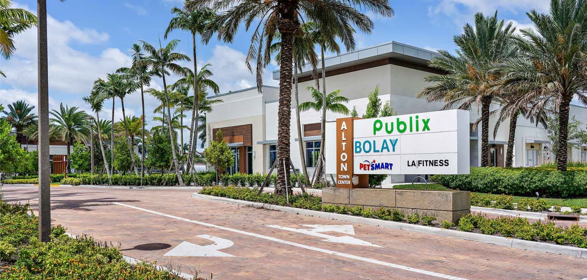

Hiring the right installer for a commercial hurricane window project in Florida is different from hiring a residential impact window company. The licensing requirements are different, the product approvals are different, the project management expectations are different, and the price of getting it wrong is much higher. A botched residential install is inconvenient. A botched commercial install is a failed inspection, a delayed CO, angry tenants, lost rent, and in the worst cases a building that cannot close out its permits. This guide lays out the checklist: license verification, insurance, commercial experience, product approvals, project management capability, references, and the red flags that should stop the conversation cold.

Why Commercial and Residential Are Different
On paper, a hurricane window is a hurricane window. In the field, commercial and residential are two different trades. The license categories differ. The products differ - commercial storefront, window wall, and curtainwall systems are not in the residential impact window catalog. The scope of work differs; commercial installs routinely involve phasing on occupied buildings, Division 08 specifications, shop drawing submittals, Procore-based collaboration with the GC, scheduled inspections at multiple phases, and permit close-out with the jurisdiction's commercial plans-review process.
A residential impact window company that does good work on single-family homes can struggle badly when asked to install a pre-glazed storefront on an occupied mixed-use center. The systems, the anchorage, the flashing details, the wind load calculations, the tenant coordination, and the general contractor interfaces are all different. For background on the overall category differences, see our commercial vs residential glazing article.
License Requirements in Florida
The primary Florida license categories that cover commercial glazing installation:
| License | Scope | Commercial Glazing |
|---|---|---|
| CGC (Certified General Contractor) | All buildings, no restriction | Yes - preferred for commercial glazing |
| CBC (Certified Building Contractor) | Commercial buildings up to 3 stories, under 20,000 SF gross area | Limited commercial work |
| CRC (Certified Residential Contractor) | Residential only | No - residential use only |
| Specialty Glass / Glazing Licenses (local) | Varies by jurisdiction | Varies - check local scope |
| Registered (county-only) | Limited to specific county | Limited - state-certified preferred |
For most Florida commercial impact work, a CGC license held directly by the installing company or through a qualifier is the baseline. ACG holds FL CGC #1531993. Any commercial project the contractor performs must be under that license or a higher-class credential.
How to Verify a License
The Florida DBPR license search at myfloridalicense.com is the authoritative source. Search by license number or by business name. A current active license will show license type, qualifier's name, business entity, and expiration date. Always verify:
- License type matches the scope (CGC preferred for commercial)
- Status is current and active, not expired or suspended
- The qualifier's name on the license matches the company on the contract
- No pending DBPR disciplinary actions
A clean license record does not guarantee good work, but an unclean or mismatched record is a hard stop.
Insurance Documentation
Commercial hurricane window installation carries real risk - falling glass, worker injuries, damage to tenant spaces and neighboring properties. Three insurance documents should appear in the contract file before any work begins:
General Liability Insurance
Minimum limits for Florida commercial glazing are typically $1M per occurrence and $2M aggregate. The certificate of insurance (COI) should name the owner and GC as additional insureds for the specific project.
Workers' Compensation
Florida requires workers' comp coverage for any contractor with employees. The COI should show current workers' comp with standard limits. Independent contractors without workers' comp coverage expose the hiring party to joint liability for worker injuries - not acceptable on commercial work.
Commercial Auto
Most commercial glazing installers run multiple vehicles on jobsites. Commercial auto coverage with appropriate limits should be in the COI package.
Always request the COI directly from the insurance carrier through an ACORD form - not a PDF supplied by the contractor. Contractor-supplied COIs can be out of date, altered, or from a lapsed policy. Carrier-direct COIs confirm current coverage.
Commercial Project References
A portfolio of commercial references is the most direct indicator of whether an installer can actually handle the project at hand. Ask for five commercial project references with:
- Project name and location
- Project type (retail, office, hospitality, multifamily, healthcare)
- Scope (system type, square footage, product systems installed)
- General contractor or owner contact
- Project completion date
- Photos of the completed work
Call at least two of the references. Ask about schedule adherence, field crew professionalism, submittal turnaround, punch list response, and how the installer handled unexpected conditions or RFIs. ACG's commercial portfolio includes Wave Food Hall in Cocoa Beach, KLUS Lighting in Vero Beach, Lake Park Innovation, Dale Mabry Retail in Tampa, Bobcat Treasure Coast, Baron Shoppes Tradition, Harbour Cay II, and Villa L'Onz in Riviera Beach - along with Euro-Wall scope at Fort Lauderdale and Atlantic Fields. For a fuller view of work in progress and completed, see the ACG portfolio.
Product Approval and Manufacturer Knowledge
A commercial installer should be able to walk through a Florida Product Approval or Miami-Dade NOA without needing to look things up. Specifically:
- Name the products they routinely install and the FL/NOA numbers
- Explain the DP rating and missile level on the approval
- Describe the anchorage conditions covered by the approval and how those match the project substrate
- Know which approvals cover HVHZ and which do not
- Know current glass lead times and tint availability for the specified system
An installer that cannot answer those questions is not operating at commercial-grade. The right commercial partners hold direct relationships with manufacturers - ACG partners with ESWindows as its flagship impact system and Euro-Wall for folding and multi-slide glass - so product knowledge, lead time visibility, and custom order capability all run through those partnerships.
Project Management Capability
Commercial projects in 2026 run on digital project management platforms. The baseline expectations:
Procore or Equivalent
Most commercial GCs run Procore. An installer that is Procore-active - submittals, RFIs, daily logs, punch lists all handled inside the platform - integrates cleanly into the GC's workflow. An installer that refuses Procore and insists on email-only communication adds friction to every interaction and misses documentation the owner will want at close-out.
Submittal Turnaround
Shop drawings, product data, color samples, and approval packages are typically due within two to three weeks of contract award on commercial work. An installer's typical submittal turnaround is a direct indicator of their capacity - slow submittals stall the whole critical path.
Schedule Communication
Daily field reports, weekly schedule updates, and proactive notice on any schedule slip. On occupied buildings, schedule communication is also tenant-facing - who's working, which area, what noise and access impacts.
Punch List and Warranty Response
Final punch and post-completion warranty items should be addressed within 7 to 14 days of notification. Slow punch-list response is where low-end installers expose themselves - the big work is done, the check is mostly cashed, and the last 5% never closes out. Check this specifically in reference calls.
Red Flags That Should Stop the Conversation
Any of the following in a bid or pre-contract interaction is a reason to stop and reassess:
- No CGC license or only a CRC/handyman/registered license for a commercial scope.
- Cash-only payment or demand for large upfront deposits (greater than 10-25%).
- Reluctance to provide COI or refusal to name the owner and GC as additional insureds.
- No commercial references - only residential or mixed projects with vague descriptions.
- Vague answers on approvals - cannot name FL or NOA numbers for products they claim to install.
- No Procore or digital PM capability - email and phone only for commercial work.
- Disparages competitors without specifics - professional installers talk about their own capabilities, not what others do wrong.
- Generic marketing that does not distinguish commercial work from residential.
- No physical address or a PO-box-only business presence.
Cost Ranges for Commercial Hurricane Window Installation
Installed 2026 commercial pricing in Florida for planning purposes:
| System Type | Installed Cost / SF Glass |
|---|---|
| Punched-opening impact windows | By scope |
| Pre-glazed storefront (ESWindows ES-8000) | By scope |
| Window wall (ESWindows ES-9000) | By scope |
| Curtainwall | By scope |
| Commercial entrances (per opening) | By scope |
| Sliding glass doors (ESWindows SGD-2020, per opening) | By scope |
High-rise and constrained-access work adds meaningful labor cost. For more detail on cost drivers, see our impact glass cost for commercial buildings guide.
The Contract Package
A clean commercial glazing contract should contain, at minimum:
- Scope description referencing specific drawings, spec sections, and product approvals
- Line-item pricing by system and area, not a single lump sum
- Progress payment schedule (typically monthly draw against completed work)
- Submittal schedule with dates
- Installation schedule with milestones
- Change order procedure
- Warranty terms (typically 1 year labor, 10-year manufacturer glass and sealed unit, frame warranty varies)
- Insurance and bonding requirements
- Retainage (typically 10% held until close-out)
Handshake deals and short one-page contracts are not appropriate for six- or seven-figure commercial glazing scopes. A proper contract package protects both sides.
Why Owners and GCs Choose ACG
ACG is a CGC-licensed Florida commercial glazing subcontractor (FL CGC #1531993) headquartered in West Palm Beach. Five-plus years active, delivering commercial glazing across Florida. We are commercial-only - we do not do single-family residential windows, which keeps our field crews, product knowledge, and project management discipline focused on the scope we actually execute.
Our flagship partners are ESWindows (commercial impact storefront, window wall, sliding systems) and Euro-Wall (folding and multi-slide). We are Procore-active on commercial scopes, turn submittals inside two weeks on most projects, and run pre-glazed storefront delivery that compresses field install time meaningfully on occupied buildings. For the full service list, see ACG services.
Ready to get started?
If you are evaluating installers for a commercial hurricane window project in Florida, send us the plans. We return a detailed scope with system recommendations, product approval references, insurance documentation, commercial references, and competitive 2026 pricing inside 48 hours. Call (772) 486-7711 or submit plans through our contact page.